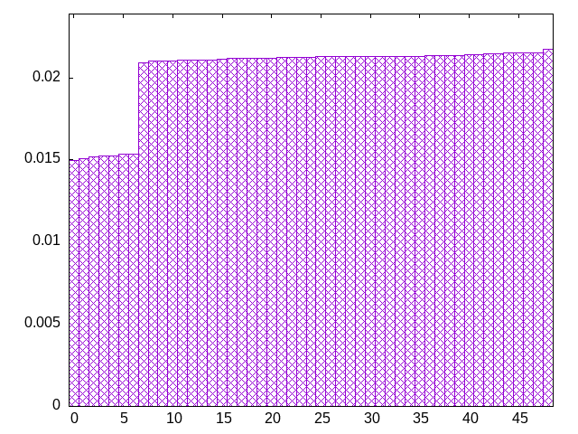
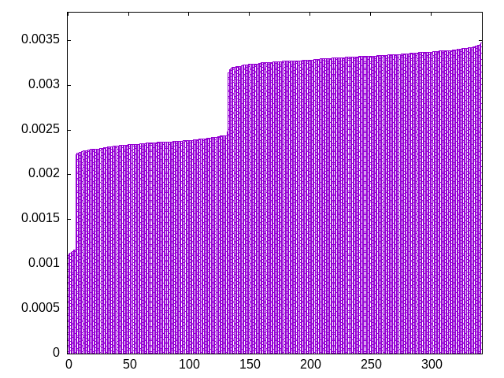
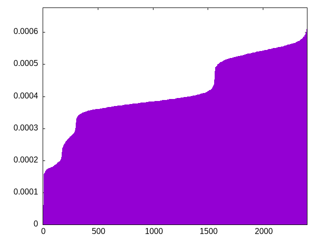
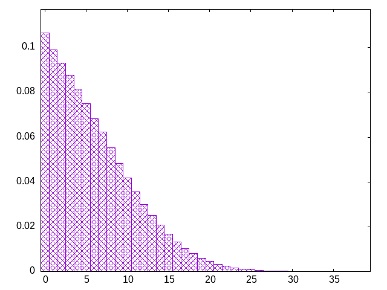

pieces are drawn from a bag (the window) which is refilled by a second bag
window=10
tsootojltzjlizjsijzzilltositjosjilzztslssisiozjtotioljtzilzjostoliloszssjjiitsolljzoozztlstjzijloiljtizltijsotlssjotozlziojitzzjtiizssztljslijltotsizojlloijtozsjtosozjslzizsstijtloilizoltsisotoljsiztjjsztitiozlszoztllsljsjojiztzoijistlzlotjosioltijtszzizjiljsoojltszzoilsltiossztozljljjtojlisstjtiitoljoiljlsssjzlzlzoiozistotiztjljttizjztlozosoolsjltjiljziolizsisjszssjlojtioiitlittolzszolsijsotzzjltztitsijjojosozsziisstltlloszljtzjzioijjtztltsjlijlzooszoiiilttlosoojzjjzsltlsiozosjtslzooiiztllsizistzljtoijltotjjitjolsizsjosjzsziooziilstzjtzlzltisoslojzltjszijtototijlsislstjlozzjziillttitjoisoloozsisizsttjzszolljozsojijissiolsjjjttillzolstjzzsjlotsttzitoitlsijoosjizitztlzljojziotjtolzosizlszijolloitsjjjszztlstlltolossiiozsijsjjotjitzoiizsltisjztlositjlzjzolttilijllostziozjzsiolsozszjolltjtlziiiostojojzsisssiltjljtztotzlosiztsljjolllzioiozzjzjsiliotltslozittjzojstzjjstlsozjlssizojliitjoislilzitjtzjtlostislootlsisojjzszjtoziotizsltszjtjzloslzlotijlooilssziiotjjlstiziitzstjtsloizosljzjlojtojs
bagginess: 0.0159
bagginess6: 0.2497
distribution1_maxgap: 1.000000000001e-06
distribution2_maxgap: 0.005584005584005585
distribution3_maxgap: 0.001066002132004264
distribution4_maxgap: 7.8000234000702e-05
diversity: 5.0
entropy: 11.526
evenness_diff: 6.019
evenness_same: 5.031
maxdrought: 36.1
maxflood: 5
peakdrought: 0.0
repchance: 0.1064
seq4_coverage: 1.0000
seq4_follow: 6.540
distribution2_graph:

distribution3_graph:

distribution4_graph:

drought_graph:

similarity: (lower is more similar)
| 0.002 | shift10_5 |
| 0.004 | shift14 |
| 0.005 | balanced9 |
| 0.009 | bag3 |
| 0.009 | deepbag_window7 |
| 0.015 | balanced_long_add_pure |
| 0.015 | shift21 |
| 0.016 | seamless_bag3_pure |
| 0.021 | bag4 |
| 0.028 | balanced_long_mul_pure |
| 0.035 | deepbag_fixed10 |
| 0.042 | wet3 |
| 0.054 | seamless_bag2_pure |
| 0.084 | shift7 |
| 0.086 | bag2 |
| 0.103 | wet2_size100 |
| 0.123 | nes_pure |
| 0.128 | fullrandom |
| 0.145 | balanced7 |
| 0.147 | nes |
| 0.214 | fullrandom_pure |
| 0.241 | weight_lin_pure |
| 0.254 | weight2 |
| 0.254 | balanced5 |
| 0.255 | deepbag_window4 |
| 0.315 | deepbag_fixed7 |
| 0.327 | wet3_size12 |
| 0.388 | shirts_g3w7 |
| 0.420 | seamless_deep_pure |
| 0.422 | wet2 |
| 0.463 | weight |
| 0.510 | shirts_smooth_c10 |
| 0.544 | tgm_pure |
| 0.562 | tgm |
| 0.639 | bag |
| 0.641 | shirts_smooth_c12 |
| 0.642 | bag_pure |
| 0.662 | deepbag_fixed4 |
| 0.678 | shift3_5 |
| 0.740 | shirts_g1w7 |
| 0.767 | tgm_tap |
| 0.773 | shirts_smooth_c8 |
| 0.782 | tgm_tap_pure |
| 0.891 | ti |
| 0.896 | weight_exp |
| 0.911 | shirts_smooth_c14 |
| 0.916 | shirts_g1w3 |
| 1.011 | weight_exp_pure |
| 1.024 | wet_pure |
| 1.058 | wet |
| 1.180 | seamless_bag_pure |
| 1.433 | shirts |
| 1.629 | shirts_smooth |
| 2.218 | repeat_recent_pure |
| 2.646 | shift1_75 |
| 4.205 | repeat_last_pure |
| 8.788 | flatbag |
| 8.788 | flatbag_pure |